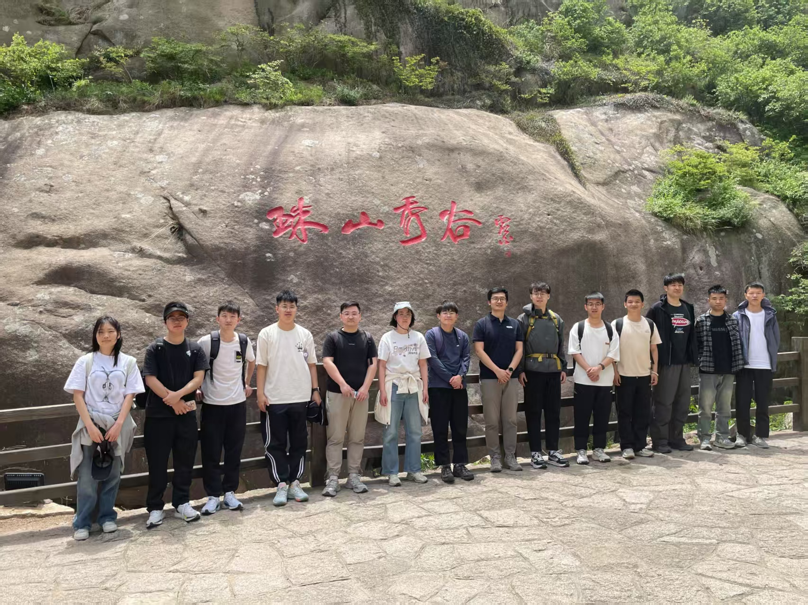

欢迎来到视觉分析与安全课题组
2025.06 信息南楼 毕业合影
2025.06 信息南楼 毕业合影

2025.05 大珠山合影 硕士毕业

VAS Lab是中国海洋大学人工智能研究院（由董军宇教授领导）下设的研究小组，由李岳尊博士负责。该课题组主要研究方向为多媒体取证、深度模型安全及计算机视觉，致力于相关技术的前沿探索与创新。近年来，团队聚焦于生成式人脸鉴伪技术的研究，并取得一系列进展，研究成果发表于NeurIPS、ICCV、CVPR、ECCV、TIFS等多个国际顶级会议和期刊，相关代码请参见Lab Github。
📢 Opening! 欢迎对科研与前沿技术感兴趣、喜爱数学和编程的同学加入课题组，联系方式 📧 liyuezun AT ouc.edu.cn。

🔉 Optimism is a happiness magnet —Mary Lou Retton

© Vision Analysis and Security Lab (VAS) @ OUC